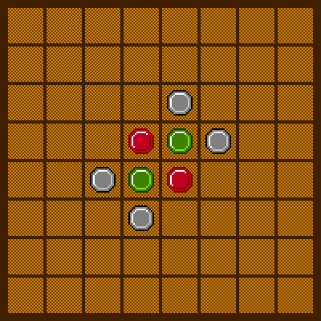

“QZhi Othello”帮助
“QZhi Othello”概述
该游戏是双人对决的棋类游戏，其目标是通过放置、翻转棋子来占据棋盘空间。当双方都无法放置新棋子时，占据棋盘面积更大的一方获胜。
“QZhi Othello”玩法
- 在“游戏”菜单上，选择适合的等级，单击“开局”。
- 单击棋盘上有灰色棋子（作为提示）的格子，放置棋子。游戏将会自动翻转所夹的对方棋子，获取分数。

- 双方交替下棋，直至决出胜负。
注意
- 游戏时请注意当前玩家，因为当玩家无处放置棋子时，游戏将会自动跳过该玩家，并发出钢琴提示音（中央 C）。
- 本游戏目前不支持悔棋功能，请在落子前仔细思考。
策略与技巧
- 尽量争取占据四个角上的位置。
- 寻找放置一颗棋子而能翻转多个方向棋子的位置。
- 设法使对方无处可下。
Copyright 2025 QZhi Studio